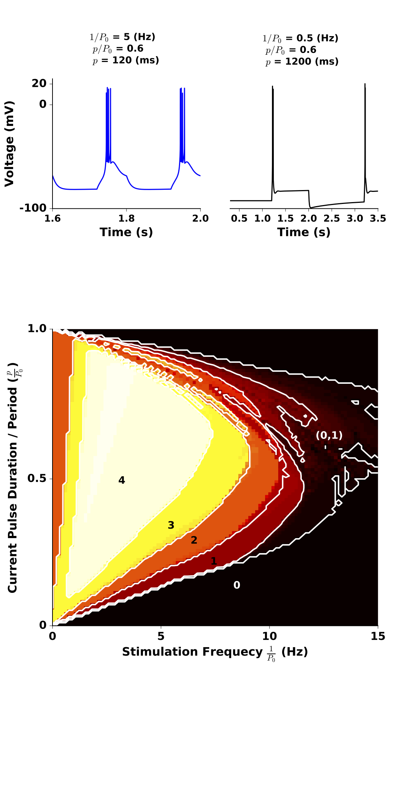
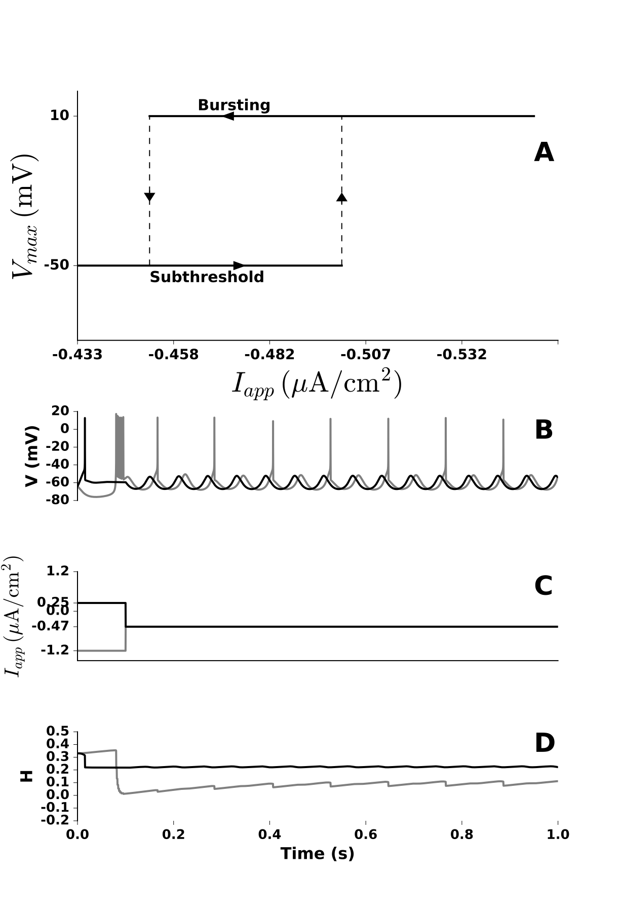
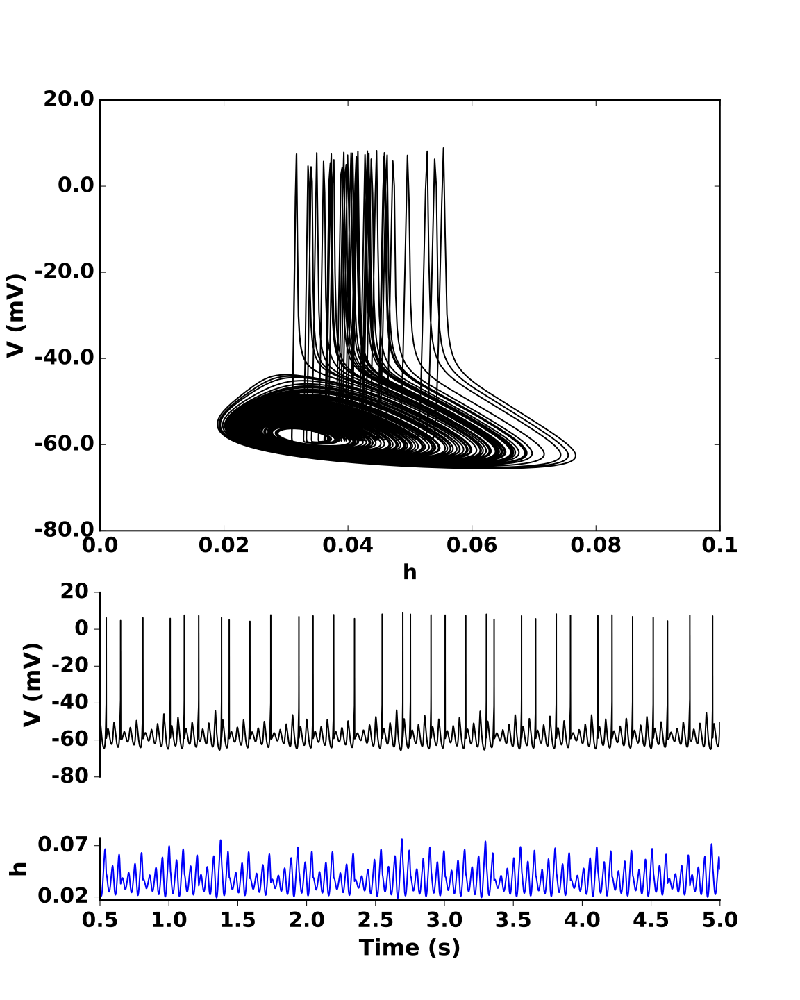
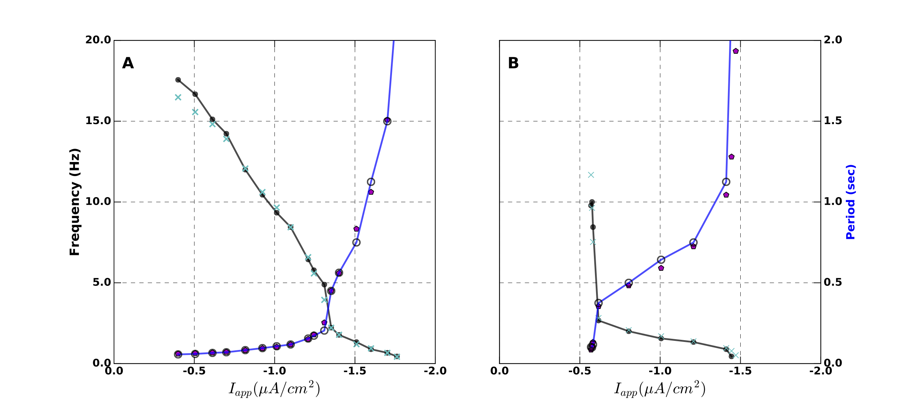
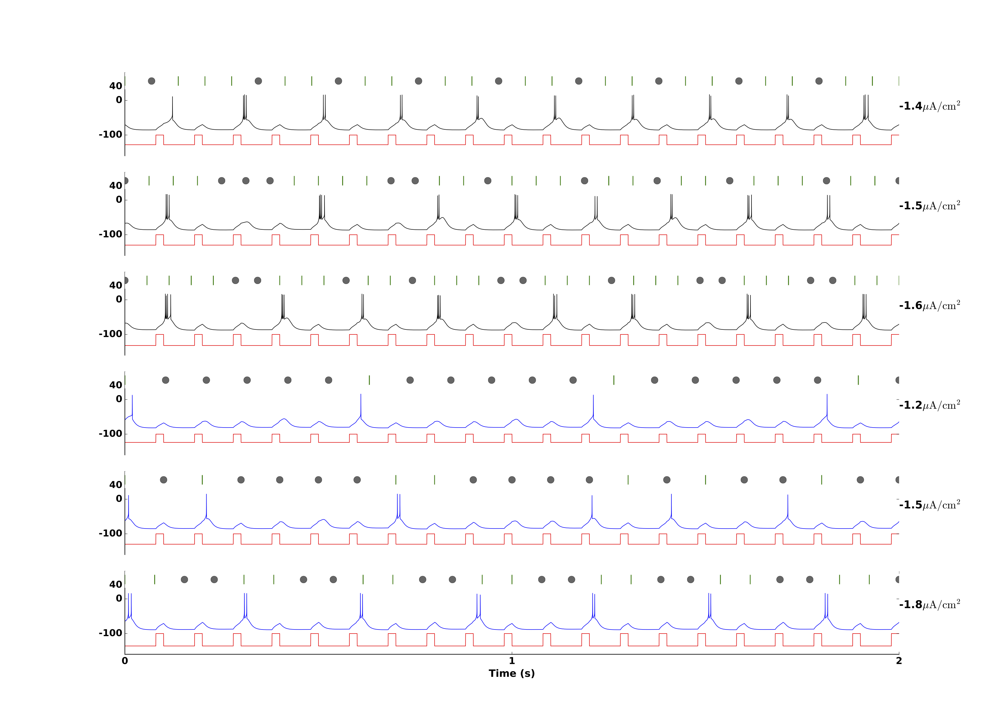

The models for the paper: Wang XJ (1994) Multiple dynamical modes of thalamic relay neurons: rhythmic bursting and intermittent phase-locking. Neuroscience 59(1):21-31 were recreated in the paper: Detorakis G (2016) [Re] Multiple dynamical modes of thalamic relay neurons: rhythmic bursting and intermittent phase-locking. ReScience 2(1):1-11 and are available in Python 3 code at this github link: https://github.com/ReScience-Archives/Detorakis-2016 Here are some images generated from the Detorakis 2016 code that are similar to figures in the Wang 1994 paper:     